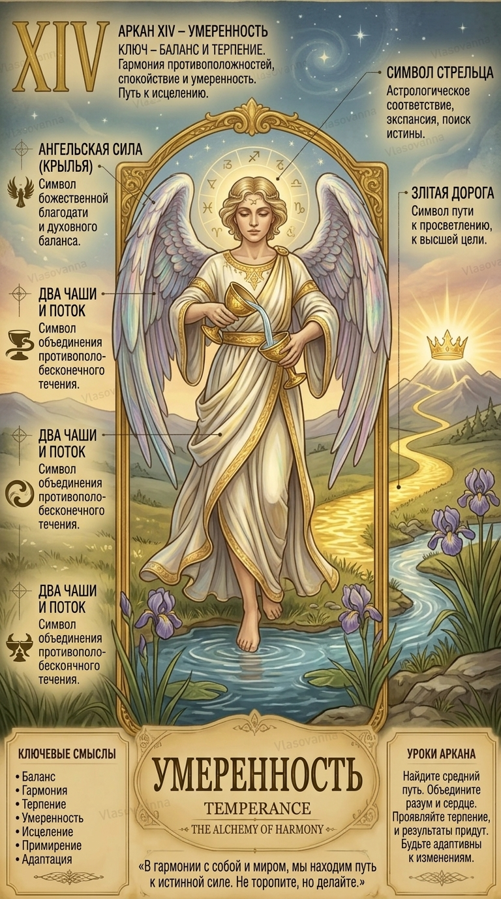

СЕРДЕЧНЫЕ ДЕЛА
14 Аркан в любви и отношениях
Спокойный, зрелый и доверительный союз. Партнеры исцеляют душевные раны друг друга. В плюсе — идиллия и верность; в минусе — скука и замалчивание проблем.

14 аркан воплощает ангельскую меру, эмоциональное равновесие и искусство соединять несоединимое в единый целебный эликсир. Это энергия тонкой чувствительности и душевного спокойствия.
Спокойный, зрелый и доверительный союз. Партнеры исцеляют душевные раны друг друга. В плюсе — идиллия и верность; в минусе — скука и замалчивание проблем.
Фармацевтика, экология, искусство, кулинария, психотерапия, дипломатия. Деньги накапливаются размеренно и стабильно благодаря разумной экономии.
Соблюдай меру во всем — в работе, отдыхе, еде и эмоциях. Твой внутренний покой — это главная защита и источник благополучия.
ОТВЕТЫ НА ВОПРОСЫ
В способности соединять противоположности: рациональное и интуитивное, материальное и духовное.
Практиковать умеренность в питании, чаще бывать у воды, заниматься творчеством.
Введи дату своего рождения, и наш движок рассчитает все 10 арканов матрицы личности, кармический хвост и знак зодиака за секунду.